TensorFlow for Unsupervised Learning
Welcome to this video on TensorFlow for unsupervised learning. After watching this video, you'll be able to explain the use of TensorFlow for unsupervised learning tasks. Demonstrate how to implement a basic unsupervised learning model using TensorFlow.
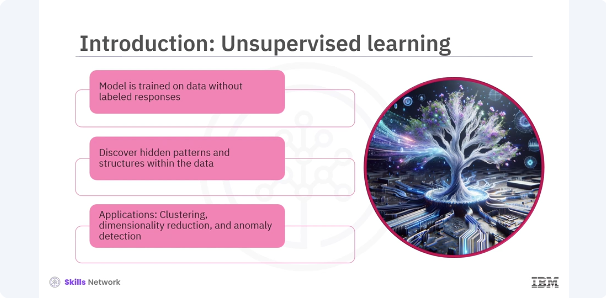
Unsupervised learning is a type of machine learning where the model is trained on data without labeled responses. This approach is essential for discovering hidden patterns and structures within the data. Common applications include clustering, dimensionality reduction, and anomaly detection. Let's learn more about unsupervised applications.
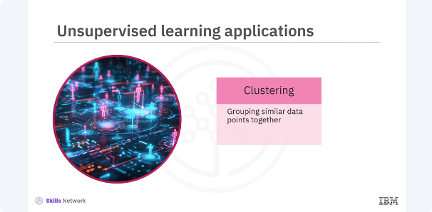
Clustering involves grouping similar data points together.
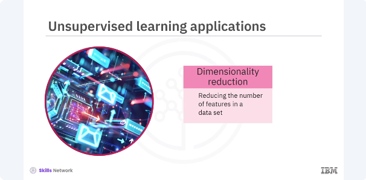
Dimensionality reduction includes reducing the number of features in a dataset while retaining important information.
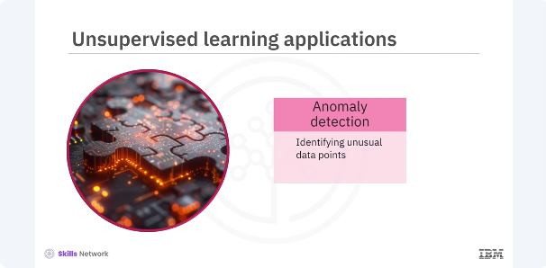
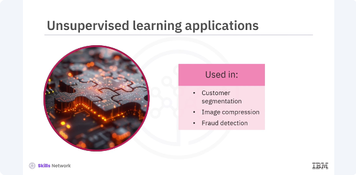
Anomaly detection involves identifying unusual data points that do not fit the general pattern. These applications are widely used in various domains such as customer segmentation, image compression, and fraud detection.
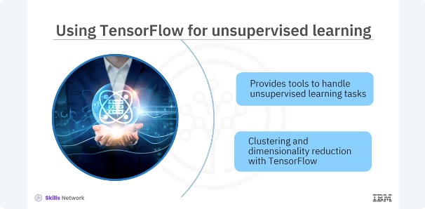
TensorFlow provides powerful tools for implementing unsupervised learning models. With its flexible architecture and extensive libraries, TensorFlow can handle various unsupervised learning tasks efficiently. In this section, you will focus on clustering and dimensionality reduction using TensorFlow.
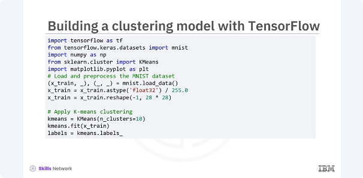
Let's start by building a basic clustering model using TensorFlow. You will use the K means algorithm, which is a popular clustering technique. In this code, you load and pre process the MNIST dataset by normalizing the pixel values and reshaping the images. You then apply the K means clustering algorithm to group the images into ten clusters.
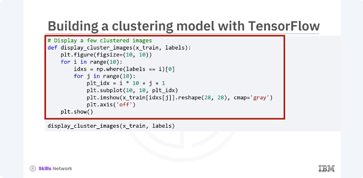
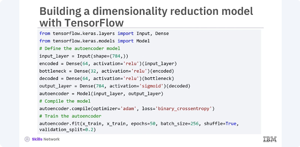
Finally, you display a few images from each cluster to visualize the results. Next, you will build an auto encoder for dimensionality reduction. An auto encoder is a type of neural network used to learn efficient representations of data by compressing the input into a lower dimensional space and reconstructing it back. In this code, you define an auto encoder with an input layer, an encoding layer, a bottleneck layer, a decoding layer, and an output layer. The model is trained to reconstruct the input data from its compressed representation. This process effectively reduces the dimensionality of the data.
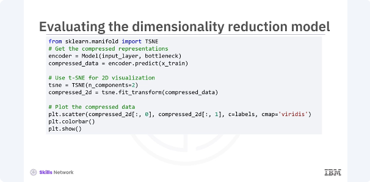
After training the Auto encoder, you evaluate its performance by visualizing the compressed representations. Let's plot the two D representation of the data. In this code, you extract the compressed representations from the bottleneck layer of the auto encoder. You then use the TSNE, a technique for visualizing high dimensional data and 2D to plot the compressed data. The resulting scatter plot shows how the data points are grouped in the lower dimensional space.
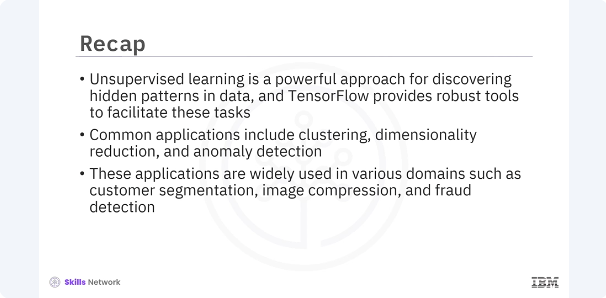
In this video, you learned that. Unsupervised learning is a powerful approach for discovering hidden patterns and data, and TensorFlow provides robust tools to facilitate these tasks. Common applications include clustering, dimensionality reduction, and anomaly detection. These applications are widely used in various domains such as customer segmentation, image compression, and fraud detection.